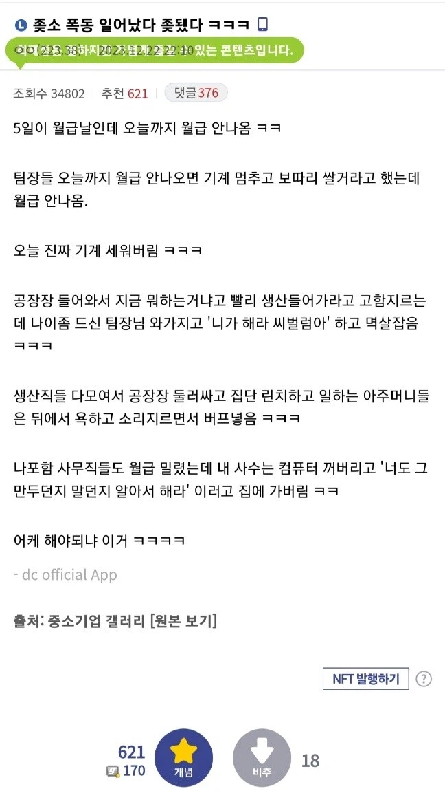

https://bbs.ruliweb.com/best/board/300143/read/76607302

https://bbs.ruliweb.com/best/board/300143/read/76607302

그냥 바로 탈출각 잡아야된다
월급 늦어지는거 참아봐야 월급 밀린 병신밖에 안된다
신용카드 쓰고 있으면 신용등급 떡락이 보너스로!!
좆소에서 월급이 밀린다, 한달정도는 봐줄만하다. 그런데 그게 2달이 밀리면???????
-> 사장이 사람의 인내심을 한계까지 간보면서 2~6달 점점 월급 밀리는게 누적됨
-> 밀린 월급은 퇴사 할때까지 못받고 사장의 좆소 운영하는 스끼리 취급받음, 직원은 월급 덜받은채 일하는 직원이 될 뿐
-> 결국 노동부에 신고하거나 소송 걸때까지 안줌
ㅋㅋ 월급 한달이 아니라 두달이상 밀리면 100% 이 루트탐
개드립에 개좆소 사장많은지 월급 밀리는거 이야기하면 발작하더라
일 힘든것도 참고 사람 좆같은거도 참지만 월급 밀린건 못참.. 아니 안참는게 맞아
좆소인데 몇달 밀리는게 뉴스에 나올수없지
ㄹㅇ 친구네 회사도 잘나가다가 사장아내가 회사돈 많이쓰다가 세금못내고 터져가지고 퇴직금도 못받고 월급도못받음 ㅋㅋ
월급 밀리는건 24시간 까지만 참을 수있다
버프는 머여 ㅋㅋㅋ 바바함성이여?
월급 15일밀리기고정+임금동결인데 사장차바뀌고자식새끼바이올린레슨 추가된거보고 개빡침
이상하네 중소기업 사장이 왜 카리스마가 없지
마마 우우우 우